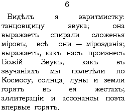
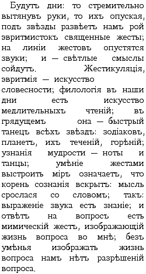
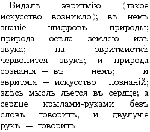
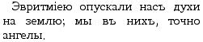
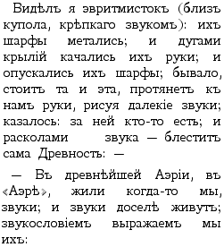
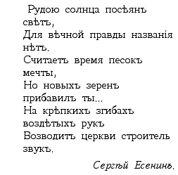

Glossolalia (Section 6)

I've viewed a eurythmist: a dancer of sound; she expresses spirals of the composition of worlds; they are all -- Universes; she expresses, how the Divine Sound pronounced us; how we flew about the Cosmos in these sounds; suns, moons, and earths blaze in her gestures; alliterations and assonances of the poet burn for the first time.

There will come days: when having extended the arms strivingly, then lowering them, a swarm of eurythmists will disperse to us under the stars the sacred gestures; sounds will descend along lines of gestures; and -- the enlightened meanings will come together. Gesticulation, eurythmy is -- the art of words; philology in our days is the art of sluggish readings; in the future it will be -- a rapid dance of all the stars: of the zodiacs, of the planets, of their orbits, of their burning; the recognitions of wisdom are -- the notes and dances; the ability to construct the world with gestures signifies, that the root of consciousness is revealed: thought grows together with the word; therefore: the expression of the sound is knowledge; and the reply to a question is a mimical gesture, which depicts the life of the question within me; without the ability to depict the life of the question we have no solutions to the question.

I've viewed eurythmy (such an art form has arisen); in it is the knowledge of the ciphers of nature; nature settled the earth from sound; the sound glitters on the eurythmist; and the nature of consciousness is -- in it [the sound]; and eurythmy is -- the art of cognition; here thought flows into the heart; and the heart speaks without words with its wings-arms; and the duplication of the arms -- speaks.

Spirits lowered us to the earth with eurythmy; we are in them, just like angels.

I've viewed eurythmists (near the cupola, fortified by sound): their veils sweeping about; and their arms rocking in arcs of wings; and their veils descending; one would be standing, while another extends to us her arms, depicting distant sounds; it seemed: someone was behind her; and with the dissonances of sound -- Antiquity itself shone --
-- Once upon a time we lived in ancient Airia, in "Air," as sounds; and the sounds live to this day; we express them with a sound-word.

The light is sown with the ironstone (iron ore) of the sun,
For eternal truth designation there is none.
The sand of dreams counts time,
But you added some new grains...
On powerful flexes of arms raised high
Constructor sound raises churches to the sky.